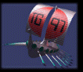

Gossip: a group even made a fli (non textured) of the inside of the "Vikingship" for their compo, if you have some
time to spend along with your willing to download it, get the RAR archive file of it here (2584 ko).
This year, PIPs where quite used ,a PIP is a Picture in the Picture;
many demo had a small square in wich you could see a reduced picture of the screen.
There are also more and more demo running in VESA 2.0 mode (linear framebuffer), which therefor requires UNIVBE
(program generating a compatibility for you video card with this mode). The owners of Matrox video cards (like
everyone at OJ) can take a leek as UNIVBE doesn't support these cards, they already are in VESA 2.0 (plus the
fact that Matrox doesn't distribute its technical docs). So where is the problem, matrox cards have the VESA 2.0?
well, yes, but demos run with a mode that wasn't included in the matrox vesa: 320x200x15 bits. These demos
have the NO MATROX
caracteristic (in the caracteristic section of course).
ERRATUM : since version 5.3a, UNIVBE (now known as SDD) supports the Millenium and the Mystique. The version 6.0 also supports the Mystique II (or 220) and the Millenium II PCI and AGP (with some bugs though).
[ >NEWS /
>PEOPLE /
>PARTIES /
>MISC /
>LINKS /
>FAQ /
>CREDITS ]